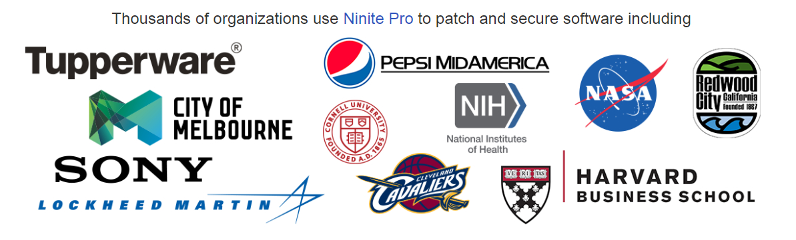
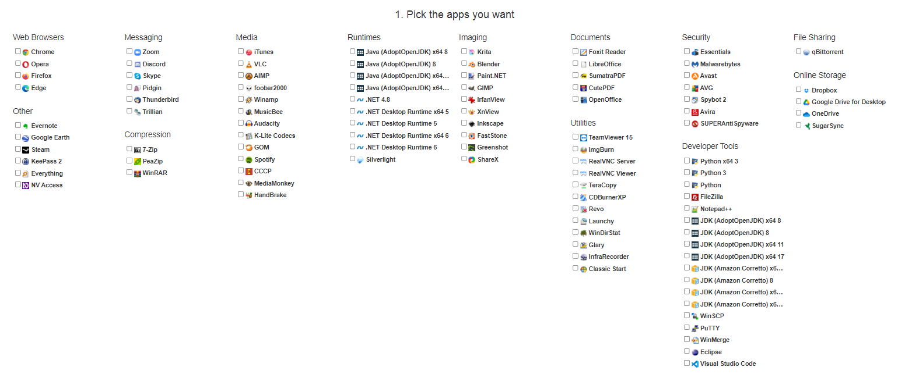

Formatar o PC: se você já passou por isso, então sabe o tédio que é ter que reinstalar tantos programas (isso é, se você usa muitos).
Bem, duas pessoas pensaram nisso e criaram o Ninite.
Ninite é um site onde você escolhe dentre diversos programas e gera um instalador customizado para instalar todos de uma vez.
Ele é bem simples de usar e é utilizado por várias empresas.

"Milhares de organizações usam Ninite Pro...(versão paga para múltiplos computadores)...para manter softwares atualizados e seguros incluindo:"
Por quê não testar você mesmo? Siga o passo a passo abaixo:
(Continua após a publicidade)
1. Visite o site do Ninite.

2. Escolha quaisquer programas você quer da lista fornecida.
3. Clique no botão "Get Your Ninite", um arquivo será baixado.
4. Abra o arquivo e apenas aguarde.
O Ninite vai instalar todos os programas na língua do seu sistema operacional e vai evitar quaisquer ofertas promocionais.
Se algum programa já está instalado, o Ninite vai atualizar ele para você no instalador, tornando ele muito útil para usar regularmente.
O Ninite funciona em qualquer Windows a partir do 7 e do Server 2012.